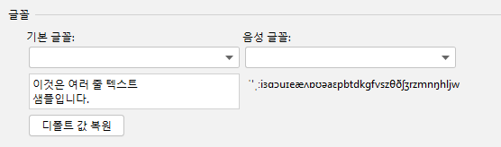

설치 후 IDE를 다시 시작합니다.
텍스트를 선택하거나 마우스로 텍스트를 가리킴 > 마우스 오른쪽 버튼 클릭 > 번역
또는 단축키를 사용하여 번역, 자세한 내용은 액션 참고
대상 텍스트를 번역하고 바꿉니다.번역 대상 언어가 영어인 경우, 출력 결과의 형식은 다음과 같습니다. 낙타 표기법, 단어 구분 기호 포함(출력 결과에 여러 단어가 포함된 경우 플러그인 설정 페이지에서 구분 기호 설정 가능: 번역 설정 > 구분 기호) 및 원래 형식.
사용법: 텍스트 선택 또는 마우스로 텍스트 가리킴 > 마우스 오른쪽 클릭 > 번역 및 바꾸기... (또는 단축키를 사용하여 번역, 자세한 내용은 액션 참고)
환경설정 (설정) > 도구 > 번역 > 기타 > 문서 번역을 선택하면 문서를 볼 때 문서가 자동으로 번역됩니다.
상태 표시줄의 번역 엔진 상태 아이콘을 클릭하거나 단축키 Ctrl + Shift + S(Mac OS: Control + Meta + Y)를 사용하여 번역 엔진을 빠르게 전환할 수 있으며.
번역 대화상자를 엽니다.기본적으로 도구 모음에 표시됩니다.디폴트 단축키:
단어를 가져오고 번역합니다.선택한 텍스트가 있는 경우 해당 텍스트에서 우선하여 단어를 가져오며, 그렇지 않을 경우 기본적으로 최대 범위에서 자동으로 단어를 가져옵니다(해당 단어 가져오기 모드는 Settings에서 설정 가능).이 액션은 기본적으로 에디터에서 마우스 오른쪽을 클릭하여 나타나는 컨텍스트 메뉴에 표시됩니다. 디폴트 단축키:
단어를 가져와서 번역합니다.가장 가까운 모든 단어를 최대 범위로 자동으로 가져오며, 수동 선택한 텍스트는 무시합니다.디폴트 단축키: (없음)
단어를 가져와서 번역합니다.가장 가까운 개별 단어를 자동으로 가져오며, 수동으로 선택한 텍스트는 무시합니다.디폴트 단축키: (없음)
번역 및 바꾸기.단어를 가져오는 방법은 번역할 때와 동일하게 작동합니다.디폴트 단축키:
문서 주석의 내용을 번역합니다.이 옵션은 기본적으로 에디터의 컨텍스트 메뉴에 표시되며(마우스 오른쪽 클릭으로 엑세스), 커서가 문서 주석 블록 안에 있는 경우 사용할 수 있습니다.디폴트 단축키: (없음)
빠른 문서에서 문서 내용을 번역 내용과 원본 텍스트 간에 전환합니다.이 옵션은 빠른 문서 팝업 창 또는 문서 도구 창에 초점이 맞춰져 있을 때 사용할 수 있습니다.디폴트 단축키(번역 단축키와 동일):
텍스트 구성 요소(빠른 문서, 알림 말풍선, 입력창...) 중 선택한 텍스트를 번역하며, 자동으로 단어를 가져오기는 지원하지 않습니다.디폴트 단축키:
번역 엔진을 빠르게 전환할 수 있습니다.디폴트 단축키:
오늘의 단어 대화상자를 표시합니다.디폴트 단축키: (없음)
번역 대화 상자 단축키:
번역 말풍선 단축키:
빠른 문서 창 단축키:
답변:
답변: 깨진 글자는 일반적으로 글꼴에 해당 문자가 없기 때문에 발생하는 문제이며, 플러그인의 설정 페이지에서 글꼴을 수정하여 깨진 글자 문제를 해결할 수 있습니다(아래 그림 참조).
답변: 암호 저장 방법을 In KeePass 방법으로 변경해 보세요 (설정 > 모양 및 동작 > 시스템 설정> 비밀번호). 원인 및 세부 정보는 다음과 같습니다:
답변: 다른 플러그인이나 외부 응용 프로그램에 의해 해당 단축키가 사용 중인 경우에는 사용할 수 없으며, 이때는 해당 작업에 대해 새로운 단축키를 설정하면 됩니다.
답변: 플러그인에 대한 문제를 발견했거나 플러그인에 대해 의견 또는 건의가 있으실 경우, 이곳을 클릭하여 피드백을 남길 수 있습니다.문제에 대한 피드백을 남기기 전에 Issue 관리 공지 사항을 먼저 읽어주세요.